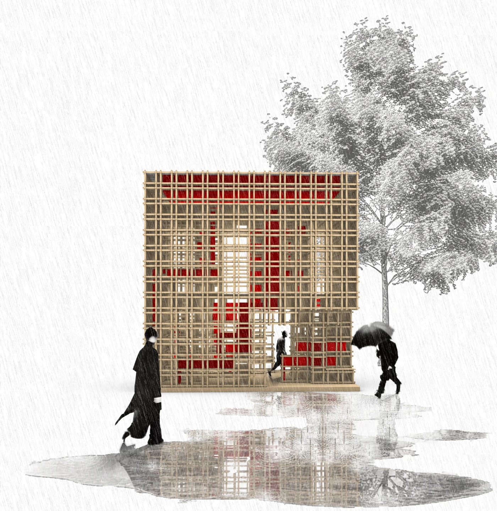
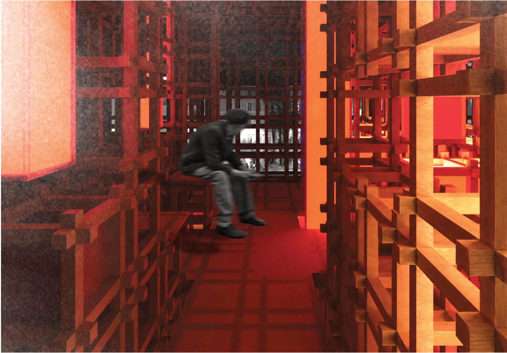
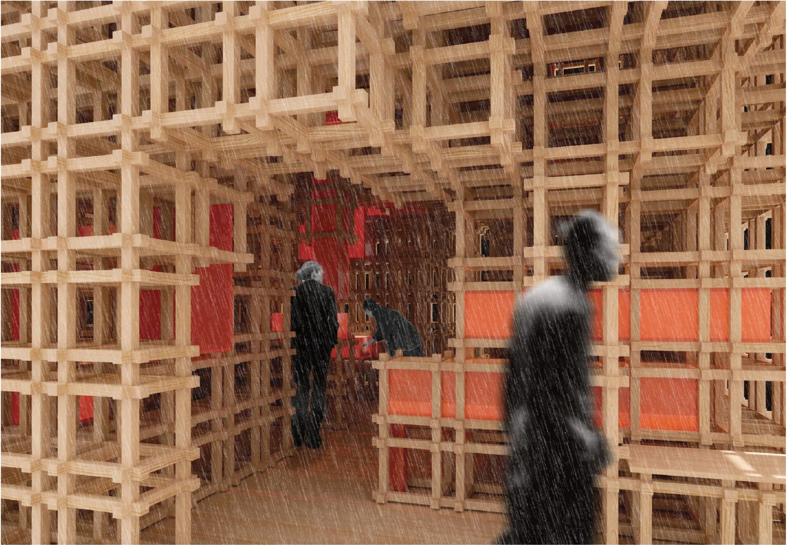
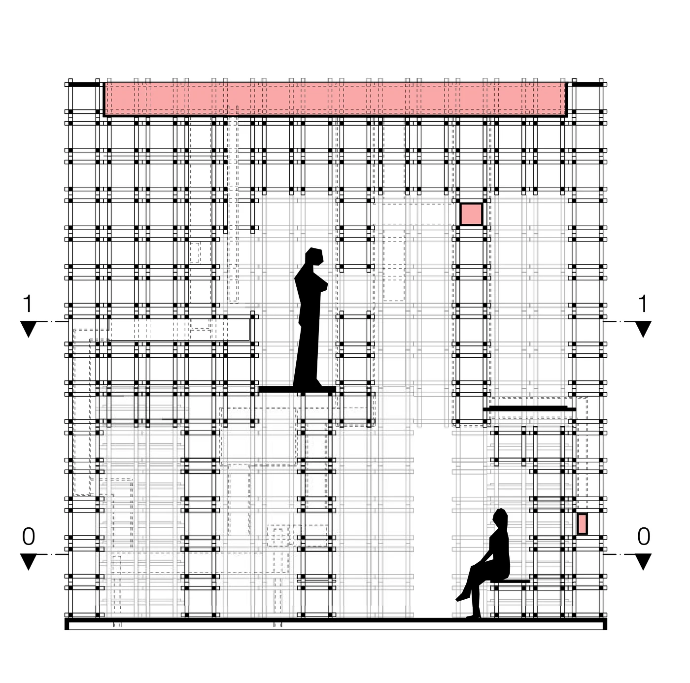
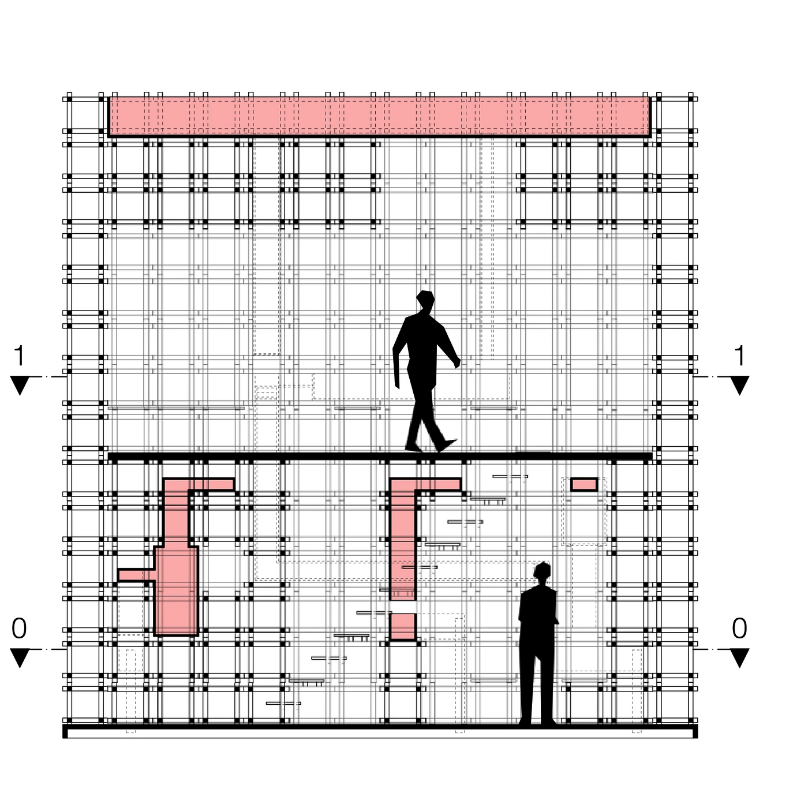
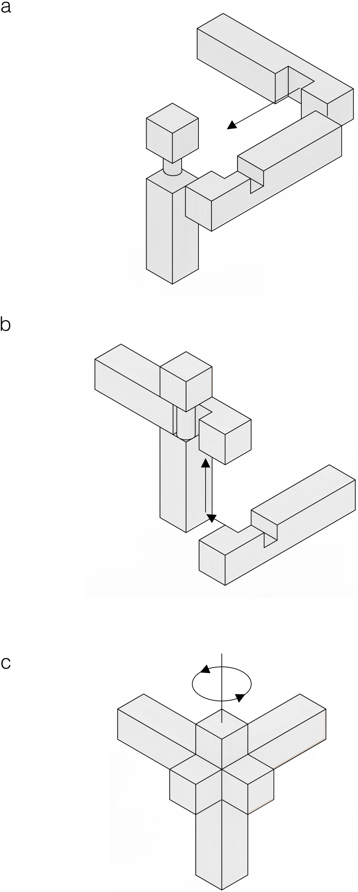
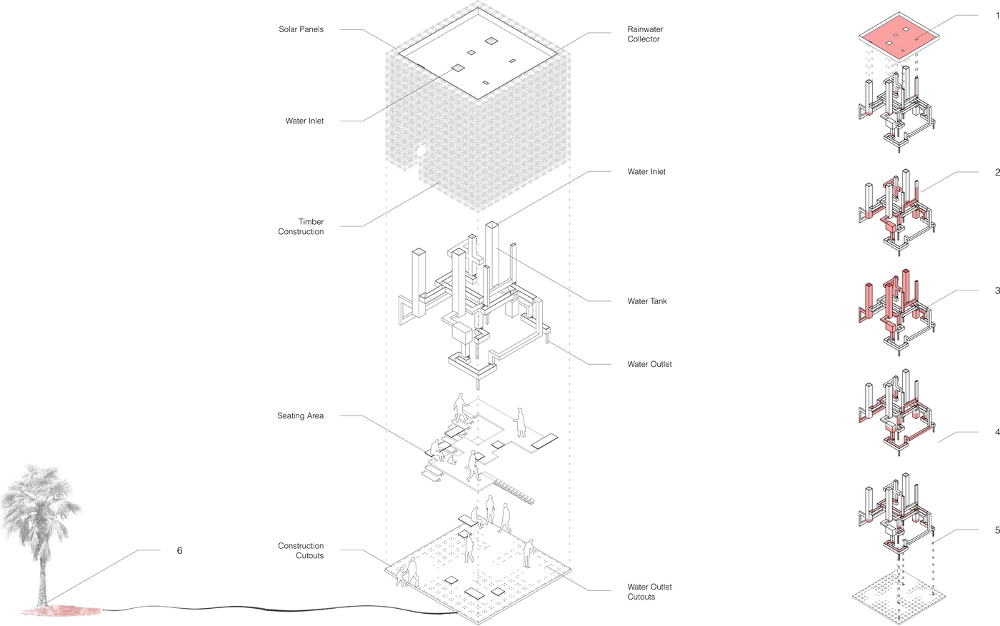

RomeRainRoom
Watercube. A timber lattice, 7 × 7 × 7 m, that collects rain and cools the air around it.

Project
Watercube is a pavilion of 7 × 7 × 7 m, built from one repeating element: a timber lattice on a 50 × 50 cm grid. There is no facade, no wall and no roof. The frame is structure, circulation and seating at once. Visitors move through it on two levels connected by stairs.
Translucent red tanks sit inside the lattice and hold up to 6,500 litres of rainwater. Some stay open, so the water evaporates and cools the air in Rome’s hot summers. Others are within reach, for passers-by to cool off. When the tanks are full, the overflow runs to the nearby trees.
The roof collects the rain. After sunset the lit tanks turn the pavilion into a lantern.
Visualisations




Floor plans


Sections


2 m

2 mDetails


Structure

